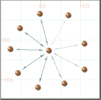

Network
Viewer | Edge | Set Edge Loyalty
Network
Viewer | Edge | Set Edge Loyalty
After selecting this option, all edges will be rendered through a linear scale of transparency corresponding to their edge values and ranging from the Most Faded Edge's transparency down to zero.
By default, Most Faded Edge's transparency is set to 86 %. In the image below, each edges has a different connection value and is rendered using a proportional transparency:

If all non-zero edges have the same weight (eg, 1 - in the case of binary data) none of them will be rendered in transparency.
Value-loyalty can be removed by selecting Edge | Remove Edge Loyalty. In that case, no transparency will be applied at all.
See also: